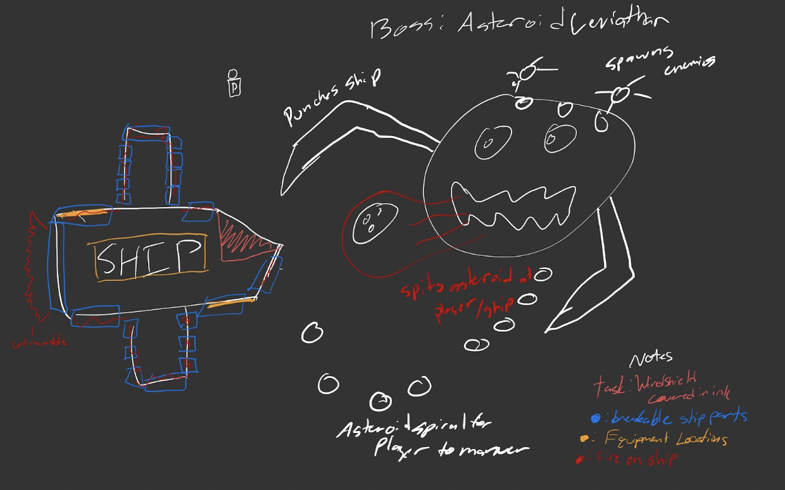
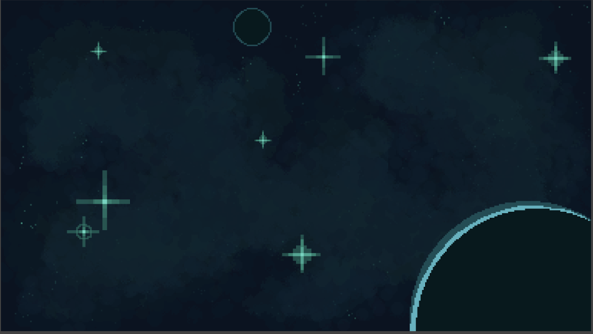

Week 2 - Development Beginnings
This week, after Wesley, our project manager, finished the game proposal 2.0, and moved onto the game design document, our team split off in order to begin development of AstrOh-No! in its different sectors.
What We Worked On
Our programmers, Davis and Brian, were tasked this week to begin coding and implementing the base logic for our game. They were given things like player movement, player attacking, ship repairing, and object throwing. This was a challenge, as without proper assets to visualize the actions the player took, they had to substitute their own temporary assets to get a good feel for the movement and player action systems.On the asset side, this week, Veron was tasked with level design. He drafted a few pages of ideas for the game, from different level designs, different styles and difficulties of enemies, bosses and mini bosses, and base level design for the start of the game, which will be very helpful for the programmers. 
Boss Concept by Veron
Our visual artist, Jordan, this week began work on backgrounds (as pictured) as well as other important assets. With his own ideas and ideas of the level designer, he can take off illustrating the ships, enemies, player, and tasks in AstrOh-No! 
Background game art sketch by Jordan
For the next week, our team continues developing their sections of AstrOh-No! The programmers continue implementing base logic for the game on Unity. The level designer and visual artist continue with asset and level creation and ideating, while the project manager will begin working on the game design document, while checking in with the different groups and collaborating in the different sectors.
← Back to Weekly Blogs